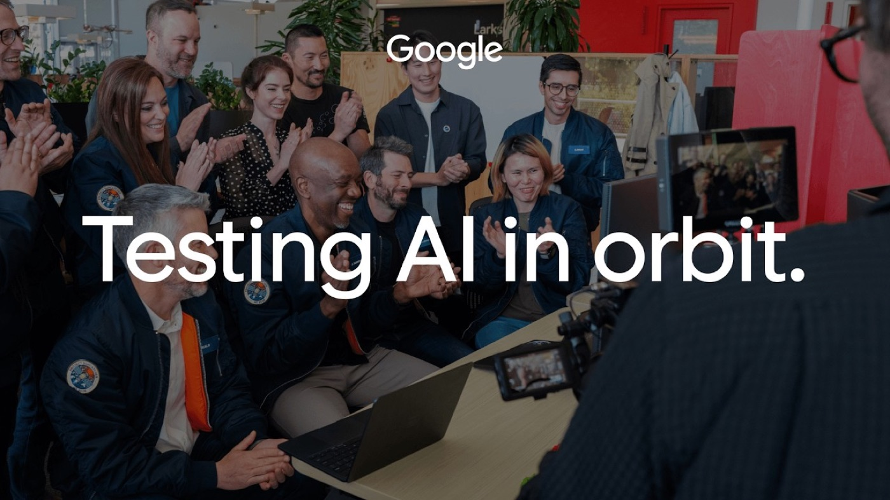
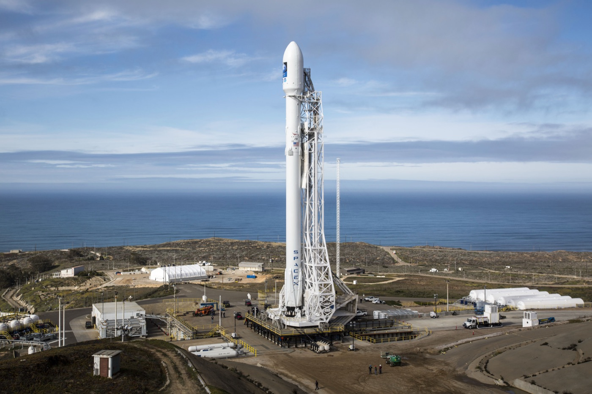

Executive Summary
An AI chip Google put into orbit has answered a question sent up from the ground. The Project Suncatcher prototype that reached low Earth orbit on October 1 finished several weeks of checkout, then used Gemma 4, loaded aboard before launch, to write a haiku about being in space and sent it down while passing over Svalbard in Norway. Google called this the first AI response from a data center class TPU in orbit, and published it on October 30. This article looks at how far those three lines go and where they stop.
The wording Google chose matters here. It did not say the first AI ever to run in space; it said the first response from a data center class chip in orbit. Small satellites have run lightweight models before, which is why the words were picked with care: what is new here is a chip from the same family that goes into a ground data center producing an inference in orbit. Speed, power draw and chip temperature were not published alongside it. The next thing to clear is early 2027, when two satellites go up to verify a link that carries data between them as light.
Sections 1 through 4 report what Google's own post, its design document and launch-week coverage set out. Section 5 moves the news onto the ground that a data team stands on, and that part is our reading.
Key numbers
The four figures below come from a design document Google published earlier, not from this announcement. Not one of them was measured in orbit. They are a transmission rate from a laboratory bench, an example constellation used to carry an argument, a dose from an accelerator beam line, and a cost line drawn by Google's own analysis. Whatever this satellite reports while it circles is not yet on the table.
Source: Google Research, Exploring a space-based, scalable AI infrastructure system design.
1.6 Tbps
Optical link on the bench
800 Gbps each way from a single transceiver pair. A ground laboratory result; orbit has yet to see it
81 satellites
Constellation in the design document
An illustrative configuration that keeps neighbors 100 to 200 meters apart inside a one-kilometer radius. Not a committed plan
750 rad
Expected dose over a five-year mission
Under half the 2 krad at which memory began to misbehave. The number came out of a proton beam, not from flight
$200 per kg
Where launch cost has to land
Google's own analysis puts this as the price that has to be reached by the mid-2030s for orbit to rival ground energy costs
The Three Lines That Came Down From Orbit
The sequence is simple. A ground station sent a prompt up as the satellite passed overhead, the satellite ran the model inside itself and composed an answer, and that answer came down on a later pass over Svalbard in Norway. A single question went up, and three lines of verse came back. Nothing but text crossed between orbit and the ground; the arithmetic itself never left the satellite.
The haiku runs three lines in English on the five-seven-five count. Google published it in full.
Blue marble below
Data streams in silent grace
Starlight feeds my core.The response from Gemma 4 aboard the satellite, as Google's official blog published it.
Google did not stop at one poem. A limerick followed by the same route, along with basic telemetry queries about the state of the spacecraft. Most of what the team did between launch and this response was closer to crossing items off a list: Google wrote that it had spent the weeks since launch completing a commissioning checklist, which included powering up the host and TPU trays and running early machine learning tests. Travis Beals, who leads the project, said of the result that "our chips have officially earned their space wings," calling it an important achievement on the long road ahead for this cosmic moonshot.
The satellite went up on October 1 from Vandenberg Space Force Base in California, riding the Transporter-18 rideshare mission on a SpaceX Falcon 9. What it carried was the subject of our September 26 article: a refrigerator-sized body with four AI chips inside, solar panels putting out a little over a kilowatt, and chips that run roughly 15 minutes before stopping to shed heat. The question then was how long a chip lasts up there. This announcement is the first look at what the satellite can actually do while it lasts.

What the Haiku Proves and What It Leaves Open
What it proves is that the chain held. Text from a ground station reached the satellite's host computer, the TPU trays powered up, the model loaded into memory and produced an answer, and the answer came back down on the next pass. Break any one of those links and nothing returns. That is why Google reached for "Hello World" to describe it. A program putting letters on a screen proves nothing about performance, but it does prove that every piece of machinery underneath is alive.
The list of things left open is longer. How long the model took to answer, how much power the chip drew doing it, how hot the hardware ran during inference: none of that was released. Nor is there a baseline from the same model running in a data center to compare against. Google set out its own next steps, and the first line of that list is evaluating how the TPUs behave under thermal stress and radiation exposure. The flight data on whether the hardware holds up starts accumulating now.
Every radiation number in hand today came from the ground. Google placed Trillium-generation TPUs in a 67 MeV proton beam and measured what they could take.
| What was measured | Result |
|---|---|
| Method | TPUs exposed to a 67 MeV proton beam to characterize total ionizing dose and single-event effects |
| Where memory starts to slip | High-bandwidth memory began showing irregularities after a cumulative dose of 2 krad(Si) |
| Expected dose over a five-year mission | Roughly 750 rad(Si) behind shielding, under half the threshold in the row above |
| Outright failure | No hard failures attributable to total ionizing dose up to the maximum tested dose of 15 krad(Si) |
Source: Google Research, Exploring a space-based, scalable AI infrastructure system design. All four rows come from accelerator testing; none of it was gathered while the satellite was flying.
One caution about reading the table. The margin does look generous, but a proton beam cannot reproduce the radiation environment of orbit. A beam delivers a large dose in a short sitting; orbit lays the same dose down over years. That is why a year of data from this satellite is a separate thing to collect. Ground testing can only suggest where trouble is likely to appear; whether the suggestion was right has to be settled in flight.
The Next Test Is Light Between Satellites
Lifting computation into orbit and tying many craft into one machine are separate problems. The chips aboard a single satellite add up to about what one server does in a ground data center. Running a large model means many machines trading intermediate results without pause, and in a data center that traffic travels on cables between racks. Orbit has no cables, so light has to do the job instead.
The picture in Google's design document is 81 satellites gathered inside a one-kilometer radius, with neighbors holding 100 to 200 meters from each other. Let them drift further and the beam spreads and the signal weakens, which is what pins the spacing. On a laboratory bench a single transceiver pair has already carried 800 Gbps each way, 1.6 Tbps in total, using dense wavelength division multiplexing with an additional spatial split. Multiply that across several pairs, the document argues, and tens of terabits per second come into range.
The early 2027 mission ties the first knot in that picture. Two satellites go up, get connected to each other, and show whether a light link that works on a bench also works between two objects moving at kilometers per second. Google Research wrote that this next prototype mission flies in early 2027 with Planet Labs, the Earth observation company. Only when craft are bound directly to one another, with no ground link in the middle, does the idea of finishing the computation where the data is born hold together.
Launch Cost, the Route Down, Repair: No Numbers Yet
The largest variable is not technical. It is the price of a launch. Google's own analysis says that for an orbital data center to come close to ground energy costs, launch prices have to fall below $200 per kilogram by the mid-2030s. Miss that and the advantage of free sunlight in orbit is eaten by the cost of getting there. Sunlight being free and putting the panel that collects it into position being cheap are two entirely different propositions.

The second is the route down. Alan George, a professor of electrical and computer engineering at the University of Pittsburgh who directs the National Science Foundation's center for space computing, told Scientific American that "we don't have the convenient, easy way to get that data back to the ground." However much arithmetic gets done in orbit, a narrow path home leaves the result with nobody able to use it. The objection lands precisely on the thing Suncatcher is aiming at.
The third is repair. Brandon Lucia, a professor at Carnegie Mellon University, told NPR the concept sounds "very sci-fi" while noting that much of the technology has already been demonstrated at the research level. His caveat was that a technician can walk into a ground data center and fix a broken chip, and nobody walks into orbit; those elements, he said, get "amplified by a factor of 10, maybe a factor of 100" in cost and complexity, so the reward has to be correspondingly large. The hydrocarbon fuel that rockets burn, and the pollution a satellite leaves behind when it re-enters at the end of its life, came in for criticism as well.
The October 30 announcement answers none of those three with a number. It reaches as far as a working chain, and the next steps Google listed in that same post are two: continuing to evaluate the TPUs under heat and radiation, and the optical test in early 2027. Launch cost and maintenance sit outside the list. The 2027 mission is also meant to join one satellite to another, which is not the road to the ground that George said is missing.
Google's own spending puts the project in proportion. NPR reported that Sundar Pichai's capital expenditure outlook for 2026 runs $180 billion to $190 billion, more than six times the 2022 figure, and that money goes overwhelmingly into terrestrial data centers. The word Google uses for Suncatcher is moonshot. This is less a facility to deploy than an option on the 2030s, bought now.
Why Pebblous Is Watching This Milestone
Strip away the orbital setting and an old question is what remains. Do you carry the data to the place that processes it, or process it where it was born and carry only the result? Earth observation satellites have taken the first option all along. A sensor captures, the craft stores, the store empties during a pass over a ground station, and analysts pick out the few useful frames afterward. Passes are short and bandwidth is fixed, so there is always imagery that gets captured and then overwritten before it ever comes down.

In Suncatcher that reversed order actually ran. A single poem makes a small payload, but the structure underneath is identical: a model ran in orbit and only its output traveled to the ground. Filter captured imagery up there, drop the cloud-covered frames and send down only what changed, and the same bandwidth carries far more usable observation. That Google is flying its next mission with an Earth observation company does not look unrelated to this direction.
Moving the place, though, moves the conditions attached to the data along with it. Three of them are worth settling in advance by whoever owns that data.
- • Discarded data never arrives. The moment a frame is filtered out in orbit, the original never reaches the ground at all. Change the model later and want to run it again, and there is nothing to run it on. Whatever rule decides what gets dropped therefore has to be far more conservative than a filter running downstream
- • The record of the filtering has to come down too. Unless which model, at which version, with which threshold did the filtering travels attached to the result, what lands is a processed artifact whose origin nobody can account for. The less reachable the place where that preprocessing runs, the more this record matters
- • Fixing a model costs something different. A ground pipeline can roll back today what it deployed yesterday, while a model in orbit waits for an uplink window and has to finish inside the length of a pass. A model placed somewhere hard to change cannot be chosen by the same standard as one placed somewhere easy to change
When we talk about AI-Ready Data, what we usually handle is getting data into a state a model can use. This news adds place as a variable. Once computation starts walking toward the data, the point at which quality and provenance get recorded moves too, from somewhere a person can reach to the space beside the sensor. Orbit is simply where that shift shows up at its most extreme; on factory floors, in vehicles and on field equipment, the same thing is already underway.
Editor's Note
There is no need to read too much into one poem. The part worth noting is less the knack for verse than the chain that held. Letters sent up reached a chip in orbit, and the answer that came out of it found its way all the way back. The only work the ground did along that route was handing over a question and taking a reply. The next numbers arrive in 2027.
Thanks for reading this far. The facts here were checked against Google's official blog and the Google Research design document, and the expert assessments come from reporting in Scientific American and NPR. No flight data on performance, heat or radiation has been released yet, so we will return to this when those numbers appear or when the 2027 optical test moves. If you have run into the ceiling of downlink bandwidth while working with observation data, we would like to hear about it.
Pebblous Data Communication Team
November 1, 2026
References
Google Official Statements
- 1.Google. (2026). "Google receives response from Project Suncatcher prototype satellite in space." The Keyword, October 30, 2026.
- 2.Google Research. (2025). "Exploring a space-based, scalable AI infrastructure system design." Google Research Blog, November 4, 2025.
Press Coverage & Expert Commentary
- 3.Ruwitch, J., Brumfiel, G. (2026). "Google launches Project Suncatcher, a step towards AI data centers in space." NPR, October 1, 2026.
- 4.Scientific American. (2026). "Google tests its plan for AI data centers in space with Project Suncatcher." Scientific American, October 1, 2026.